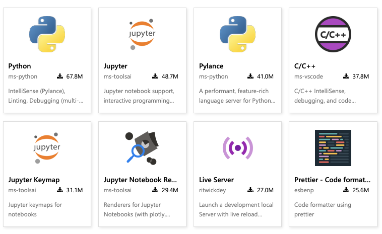
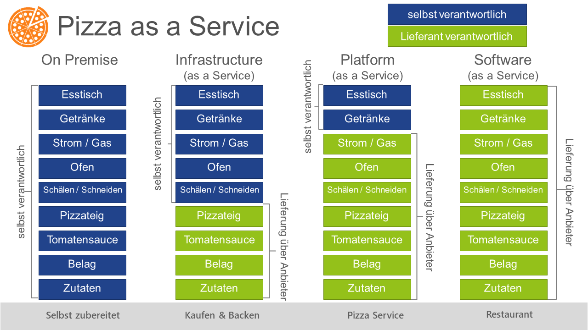

Freitags-Akademie
Software Development
Plan
Source Control Management
Allgemeines
Source Control Management = Versionsverwaltung
Normierter Vorgang des Archivieren/Speichern von Quellcode [nichtproprietäre Dateien]
Aufteilung in:
Repositories
Verwaltetes Digitales Archiv
Branches
Neuerung unabhängig gestalten
Commit
Änderungen kenntlich machen
Tag
Festmachen eins Standes auf einen definierten Punkt
Anbieter

- Microsoft
- 2008
- Populärster Online Dienst
- GitLab Inc.
- 2012
- Open Source Dienst
- Aosi Network
- GitHub-Klon
- Markt: China
- Atlassian
- 2008
- an Unternehmen ausgerichtet
GitHub Account und Berechtigungen
Beispielprojekte
GIT Cheat Sheet
$ git clone repository-url [folder]
$ git pull
$ git push
Pushen des lokalen Repositories nach Remote (Sicherung)
$ git fetch
$ git add [file/folder]
$ git add ./source
$ git commit -m "commit-message"
$ git branch
$ git branch -c feature/newFeature
Erstellen eines neuen Branches auf Basis des aktuellen Branches
$ git init
$ git switch branchName
Code Editors
[I]ntegrated [D]evelopment [E]nvironment
Infologistix Standard IDE

Visual Studio Code Documentation/Download
VsCode Quickview

VsCode Quickview
Top Used Extensions

Weitere sind u.a.: GO, Docker, Kubernetes, RedHat-YAML, MSSQL, Angular, Vue.js, ...
Software Development
Konzepte
Data Based Software
- Micro-ETL Services (SQL-Frameworks)
- Web-Dashboarding
- Plugin-Development für Data Suites
Cloud-Integration & Cloud-Perfomance
- Containerisierte Anwendungen
- Cloud-Native Untersützung von bestehenden Anwendungen
- Frameworks für Small Data (z.B. IoT-Stack)
Sprachen

Best to learn 2023
1. Javascript
2. Python
3. Go
2. Python
3. Go
4. Java
5. Kotlin
6. PHP
5. Kotlin
6. PHP
7. C#
8. Swift
9. R
8. Swift
9. R
10. Ruby
11. C and C++
12. Matlab
11. C and C++
12. Matlab
13. TypeScript
14. Scala
14. Scala
Principles & Coding Guidelines

Software Architektur
Design Guidelines
- Beschreibt das generelle Vorgehen und Umsetzung eines Konzeptes am Reißbrett
- Es wird das gesamte Konzept basierend auf Pattern in UML und Text erarbeitet.
Design Guidelines
- Sprachenorientierte Richtlinien
- Vorgaben für
- Objekte
- Funktionen
- Dokumentation
Beispiel: Cloud Software
Do it Yourself
Nützliche Infos
Visual Studio Code
- In der Menüleiste lässt sich ein Terminal direkt öffnen.
( [STRG+SHIFT+Ö] | [CTRL+SHIFT+`]) - Die Erweiterungen GO, GitLens sind sehr empfehlenswert
- GitLens vereinfacht die Arbeit mit GitHub extrem
Git Konfiguration
$ git config --global user.email "you@example.com"
$ git config --global user.name "your name"
Damit lässt sich vorneweg festlegen, dass es auch wirklich ihr seid, die autorisiert sind, etwas in das Remote Repository zu commiten
Hackathon
Vorraussetzungen
stackoverflow + installierte GO/Git Umgebung
Challenge
Arbeitet im Team an einem REST-Backend. Dieses soll unterschiedliche Datentypen und
deren Inhalte wiedergeben können
Zeit
1 Stunde. Wir treffen uns dann gemeinsam um die Ergebnisse zu präsentieren
Tips & Tricks
Repository klonen
$ git clone https://github.com/infologistix/teamX
Ordner wechseln
$ cd /pfad/zum/ordner # absolut
$ cd pfad/zum/ordner # relativ
Go-Anwendung ausführen
$ go run cmd/*
Eigene Dateien commiten und pushen
$ git add [datei]
$ git commit -m "[datei] hinzugefügt"
$ git push
Danke!
Quellcode zu dieser Präsentation:
GitHub
GitHub